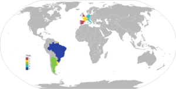

| Anul | Campioana | Scor final | Vicecampioana | Locatia | Spectatori |
|---|---|---|---|---|---|
| 1930 | Uruguay | 4-2 | Argentina | Montevideo, Uruguay | 80000 |
| 1934 | Italia | 2-1 | Cehoslovacia | Roma, Italia | 50000 |
| 1938 | Italia | 4-2 | Ungaria | Paris, Franta | 45000 |
| 1950 | Uruguay | 2-1 | Brazilia | Rio de Janeiro, Brazilia | 174000 |
| 1954 | Germania | 3-2 | Ungaria | Berna, Elvetia | 60000 |
| 1958 | Brazilia | 5-2 | Suedia | Solna, Suedia | 51800 |
| 1962 | Brazilia | 3-1 | Suedia | Santiago, Chile | 69000 |
| 1966 | Anglia | 4-2 | Germania | Londra, Anglia | 93000 |
| 1970 | Brazilia | 4-1 | Italia | Mexico City, Mexic | 107000 |
| 1974 | Germania | 2-1 | Tarile de Jos | Munchen, Germania | 75000 |
| 1978 | Argentina | 3-1 | Tarile de Jos | Buenos Aires, Argentina | 71000 |
| 1982 | Italia | 3-1 | Germania | Madrid, Spania | 90000 |
| 1986 | Argentina | 3-2 | Germania | Mexico City, Mexic | 114000 |
| 1990 | Germania | 1-0 | Argentina | Roma, Italia | 73000 |
| 1994 | Brazilia | 0-0 (3-2 dupa penalty-uri) | Italia | Pasadena, California, Statele Unite | 94000 |
| 1998 | Franta | 3-0 | Brazilia | Saint Denis, Franta | 80000 |
| 2002 | Brazilia | 2-0 | Germania | Yokohama, Japonia | 69000 |
| 2006 | Italia | 2-1 | Franta | Berlin, Germania | 69000 |
| 2010 | Spania | 1-0 | Tarile de Jos | Johannesburg, Africa de Sud | 84000 |
| 2014 | Germania | 1-0 | Argentina | Rio de Janeiro, Brazilia | 74000 |
| 2018 | Franta | 4-2 | Croatia | Moscova, Rusia | 78000 |
| 2022 | Argentina | 4-3 | Franta | Lusail, Qatar | 88966 |

Harta tărilor câștigătoare